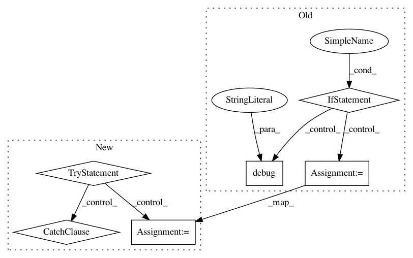

fc44c71d4aa2e8a5ef60effd4bfe7fb82dffbf17,src/pudl/extract/excel.py,GenericExtractor,load_excel_file,#GenericExtractor#Any#,243
Before Change
info = self.ds.get_resources(self._dataset_name, **partition)
if info is None:
logger.info(f"No resource found for {partition}, {page}")
return
item = next(info)
p = Path(item["path"])
xlsx_filename = self.excel_filename(page, **partition)
if xlsx_filename in self._file_cache.keys():
logger.debug("Grabing cached file.")
excel_file = self._file_cache[xlsx_filename]
else:
logger.debug("Grabing new file.")
if p.name != xlsx_filename:
zf = zipfile.ZipFile(p)
excel_file = pd.ExcelFile(zf.read(xlsx_filename))
else:
excel_file = pd.ExcelFile(p)
self._file_cache[xlsx_filename] = excel_file
return excel_file
def excel_filename(self, page, **partition):
After Change
xlsx_filename = self.excel_filename(page, **partition)
if xlsx_filename not in self._file_cache:
excel_file = None
try:
// eia860m exports the resources as raw xlsx files that are not
// embedded in zip archives. To support this, we will first try
// to retrieve the resource directly. If this fails, we will attempt
// to open zip archive and locate the xlsx file inside that.
// TODO(rousik): if we can make it so, it would be useful to normalize
// the eia860m and zip the xlsx files. Then we could simplify this code.
res = self.ds.get_unique_resource(
self._dataset_name, name=xlsx_filename)
excel_file = pd.ExcelFile(res)
except KeyError:
zf = self.ds.get_zipfile_resource(self._dataset_name, **partition)
excel_file = pd.ExcelFile(zf.read(xlsx_filename))
finally:
self._file_cache[xlsx_filename] = excel_file
// TODO(rousik): this _file_cache could be replaced with @cache or @memoize annotations
return self._file_cache[xlsx_filename]
def excel_filename(self, page, **partition):
In pattern: SUPERPATTERN
Frequency: 3
Non-data size: 6
Instances
Project Name: catalyst-cooperative/pudl
Commit Name: fc44c71d4aa2e8a5ef60effd4bfe7fb82dffbf17
Time: 2021-01-06
Author: rousik@gmail.com
File Name: src/pudl/extract/excel.py
Class Name: GenericExtractor
Method Name: load_excel_file
Project Name: home-assistant/home-assistant
Commit Name: 502ebd2a311e1df2630527a22943f9dc8079a812
Time: 2018-01-25
Author: 6901273+i-am-shodan@users.noreply.github.com
File Name: homeassistant/components/camera/foscam.py
Class Name: FoscamCam
Method Name: disable_motion_detection
Project Name: home-assistant/home-assistant
Commit Name: 502ebd2a311e1df2630527a22943f9dc8079a812
Time: 2018-01-25
Author: 6901273+i-am-shodan@users.noreply.github.com
File Name: homeassistant/components/camera/foscam.py
Class Name: FoscamCam
Method Name: enable_motion_detection